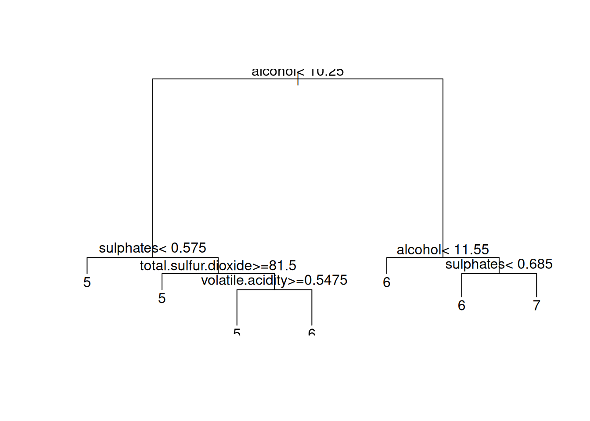
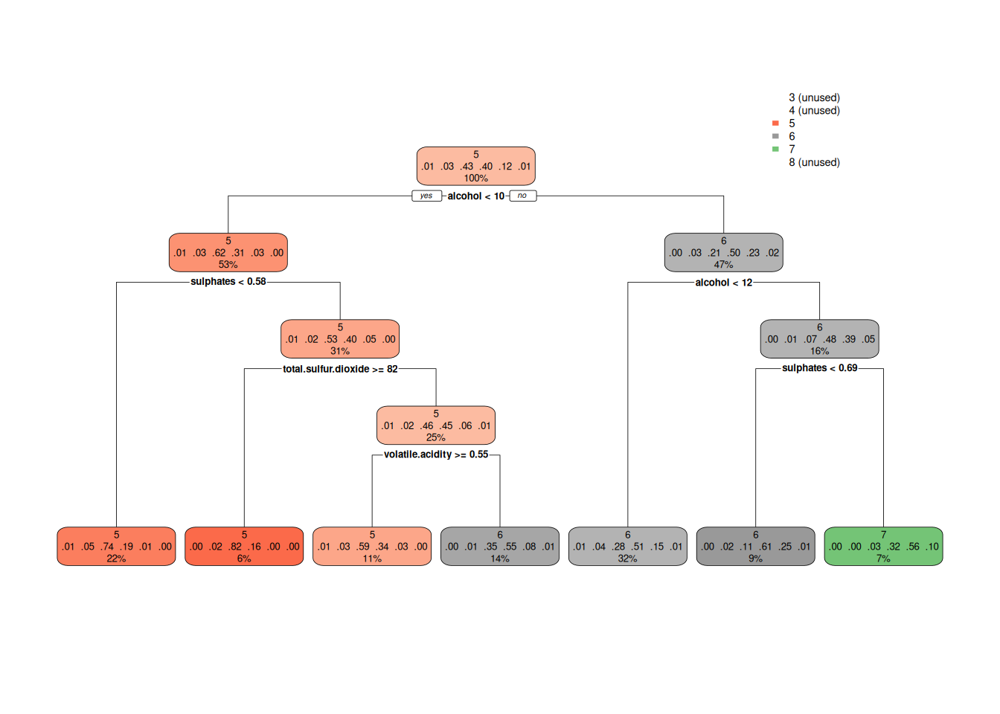
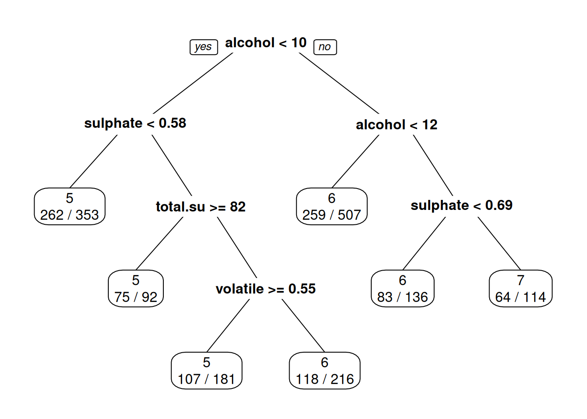
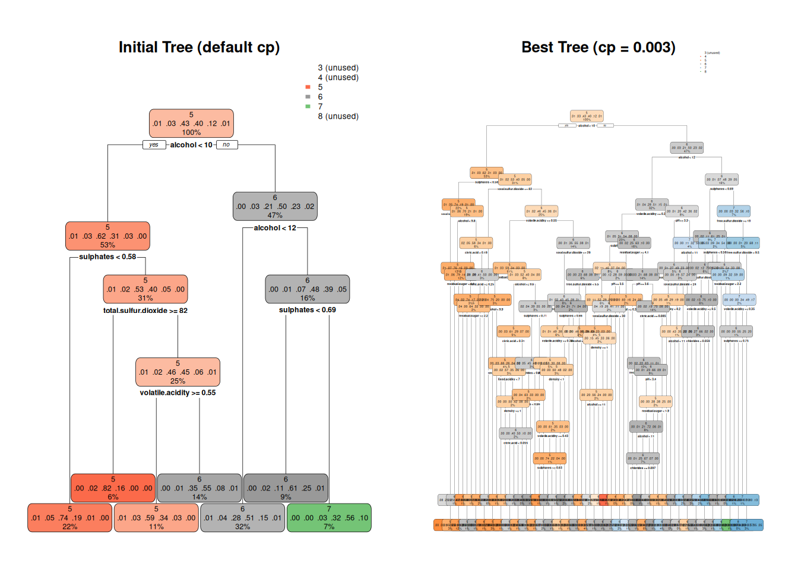

Decision Trees use a simple system for making clean hierarchical rules that can help predict the value of a numeric or categorical variable. The idea is very old (Linneaus made one in 1735 and Darwin used one in 1859), but modern computers make it easy to generate them with ease.
One common algorithm for making decision trees is called CART (Classification and Regression Trees). In R, we get CART from the rpart package. It uses a simple algorithm to make trees very quickly, so very large problems can be solved. Once we learn CART models, we can see more complicated variations, such as BART, Bagging and Boosting, and Random Forests. The latter is the model that we will learn next.
The Data Set
For this lab, we’ll keep looking at the red wine data set we looked at in the last homework. As a reminder, it comes from the UC-Irvine Machine Learning Repository. It’s a data set the relates several types of measurements of red wine to a (human-created) rating of the wine’s quality (a whole number between 3 and 9). You can copy it from the last homework, or download it from here:
This first bit of code loads our libraries, loads the data set and reminds you of the variable names. Note that the read.csv command can actually download data sets from the internet, as well as load them locally.
# Note the set.seed command to ensure repeatability on our randomness.set.seed(4239857)library(tidyverse)
── Attaching core tidyverse packages ──────────────────────── tidyverse 2.0.0 ──
✔ dplyr 1.1.4 ✔ readr 2.1.5
✔ forcats 1.0.0 ✔ stringr 1.5.1
✔ ggplot2 4.0.0 ✔ tibble 3.3.0
✔ lubridate 1.9.4 ✔ tidyr 1.3.1
✔ purrr 1.1.0
── Conflicts ────────────────────────────────────────── tidyverse_conflicts() ──
✖ dplyr::filter() masks stats::filter()
✖ dplyr::lag() masks stats::lag()
ℹ Use the conflicted package (<http://conflicted.r-lib.org/>) to force all conflicts to become errors
# The install.packages command is only needed once.# run them if you haven't installed the packages yet.# install.packages("rpart")#install.packages("rpart.plot", repos='https://cran.case.edu/' ) # install.packages("cvTools")library(cvTools)
library(rpart)library(rpart.plot)# Comment the line below to try download the file directly to a location:wine <-read.csv("http://archive.ics.uci.edu/ml/machine-learning-databases/wine-quality/winequality-red.csv", sep=";")# You can instead choose to download it to your project, folder or drive#download.file("http://archive.ics.uci.edu/ml/machine-learning-databases/wine-quality/winequality-red.csv", "winequality-red.csv")#If you download it, you can bring it into R from your folder, not the internet.#wine <- read.csv("winequality-red.csv", sep=";")names(wine)
First, lets assume that the numbers in the quality column represent quality categories that wine testers have assigned to each wine. So we need to ensure now that R reads this column exactly as a categorical variable, or its values as factors.
The code below creates a new data set, where quality is set to be a categorical (factor) variable. Take a look and make sure it succeeded.
The rpart library gives us the rpart command, which is used to create CART trees. The name of the library rpart stands for ‘Recursive Partitioning and Regression Trees’. The basic format for rpart is similar to that of the lm command. Note that interactions aren’t allowed in the formula for rpart.
rpart(response ~ exp1 + exp2 + ..., data = data_file)
Here’s the command used to predict the quality of wine using all the variables:
fit.rpart.cat <-rpart(quality ~ ., data=wine.cat)
After you make the tree, you will likely want to get information from it. The next few sections show some things you can do.
Plotting the Tree
It’s relatively easy to plot the tree created by rpart. The base-R plot command makes the tree itself, but if you want to decorate it, you also need to use the text command. These are general-purpose commands that can do many things, but they have specific meaning for your fitted trees. Compare the two graphs:
plot(fit.rpart.cat)text(fit.rpart.cat)

If your plot or text doesn’t look so good, you can try to improve it, but you can also use the rpart.plot command, which naturally makes better plots.
rpart.plot(fit.rpart.cat)

Inside the rpart.plot package is another command, prp, which makes a different kind. You can decide what kind of tree looks best, and there are many options to change colors, what extra information is included, etc.
prp(fit.rpart.cat, extra=2)

Regardless of which tree you like, what is true is that the number in the nodes are the average of the points remaining in the nodes. So, by making the splits, we would hope to find means that are quite different from each other.
Question 1
Take a look at the tree diagram above. Trees are often human-understandable. What can you say about the apparent relationship between alcohol and quality category? How about volatile.acidity and overall quality ratings? Answer below:
Answer to Question 1:
Looking at the tree structure, alcohol is the most important variable - it’s the first split. Wines with alcohol < 10% are predicted as quality 5, while wines with alcohol >= 10% are predicted as quality 6. Higher alcohol wines tend to get higher quality ratings. For wines with alcohol > 12%, the model predicts quality 6 or 7, showing a clear positive relationship between alcohol content and quality.
Volatile acidity appears deeper in the tree, but still matters. For wines with low alcohol (< 10%) and low sulphates (< 0.58), volatile acidity isn’t used. However, for wines with moderate alcohol and proper sulphates, higher volatile acidity (>= 0.55) leads to quality 5 predictions, while lower volatile acidity leads to quality 6. This suggests volatile acidity hurts quality - high levels push ratings down.
Text Output
If you just type the name of your rpart fit, you’ll get a printout in text form that tells you the following:
Numbering and indentation represents the nesting of branches in the tree.
Branches marked with asterisks are final branches at the bottom of the tree.
For each branch, you’ll get five pieces of information
The logical expression that defines the branch.
The number of data points that go into that branch.
The classification error for data points in that branch.
The predicted category of y for that branch.
The proportion of responses of each category in the node.
You probably won’t have to use this output very much, but here it is:
If the CART algorithm had stopped sooner, you might have had a single end node for all data points that had alcohol >= 11.55. Based on the text output, what would have been the predicted quality for such wines? Answer below:
Answer to Question 2:
Looking at node 7 in the text output: 7) alcohol>=11.55 250 131 6 (0 0.012 0.072 0.48 0.39 0.048)
The predicted quality (yval) is 6. This node contains 250 wines with alcohol >= 12, and the model predicts quality 6 for all of them. The probabilities show that 48% are quality 5, 39% are quality 6, and 4.8% are quality 7, but the predicted category is 6 since that’s the most common outcome.
Question 3
In the text output of the CART model loss represents the number of incorrectly predicted categories. The reduction in this number, measured as a difference between the loss before passing through the node and after, also means an improvement in the purity of the groups after the split. Consider the first split (the first node with the condition alcohol<10.25) and calculate the reduction in the loss due to passing through this split. Show your work! Answer below:
Answer to Question 3:
Looking at the first split: - Root node (node 1): loss = 918, n = 1599 - Left branch (node 2, alcohol < 10.25): loss = 323, n = 842 - Right branch (node 3, alcohol >= 10.25): loss = 379, n = 757
Before split: Total loss = 918 (on 1599 observations)
After split: Total loss = 323 + 379 = 702 (on 842 + 757 = 1599 observations)
Reduction in loss: 918 - 702 = 216
The split reduced classification errors by 216, meaning we correctly classified 216 more wines by splitting on alcohol content compared to predicting the same quality for everyone.
Making Predictions with the predict Command
There’s one major drawback to using our handy add_predictions command to make predictions. More complicated modeling commands also create various types of predictions and need extra options. The add_predictions command doesn’t let you add extra options. So, we’ll use the base-R predict command instead:
The predict command can do several things: - If you give it only the result of a modeling command, it will give you predictions from the same data set used to create the model. - If you give it the newdata option, it will make predictions for new data that you give it, which must be in a dataframe with the same variable names as the original training data. - For some prediction methods, you can specify a type option to get different sorts of predictions.
For example, using rpart to get classification models, you can either get the probability that each observation falls in each category (type="prob") or simply the prediction itself (type="class"). Compare the output from the two types of prediction below:
In your own words, briefly explain how you would use the output of the first predict command to get the output of the second predict command. Answer below:
Answer to Question 4:
The first predict command with type="prob" gives probabilities for each quality category. To get the class prediction, find the category with the highest probability for each wine. For example, if a wine has probabilities of 0.1 for quality 5, 0.7 for quality 6, and 0.2 for quality 7, the predicted class would be 6 since that’s the highest probability. The type="class" option does this automatically - it picks the category with the maximum probability for each observation.
Evaluating Classification Models
If you’re predicting values of a categorical variable, you can’t evaluate your predictions using RMSE the way we did it in the linear regression models where we had a numeric response since now we do not have values that subtracted, squared, added, etc. We have to find some other measure of the model’s performance. An obvious choice would be to evaluate its classification error: What percentage of the time does the model fail to predict the correct response value? To answer that, we need to first create predictions, then compare them to actual values.
Calculating Classification Error by Hand
It’s not hard to calculate accuracy by hand with a few tidyverse commands. We need to - add predictions to the data frame (using mutate and predict, rather than add_predictions), - calculate a logical variable that records whether the prediction and actual response variable value are different, then - summarize to get a percentage (using the trick we saw earlier in the class).
The Metrics package gives a non-tidyverse shortcut command that takes two vectors and gives you the percentage of the time they don’t match.
# Leave this command commented here, but run it once from the Console if you# don't have the `Metrics` package.# install.packages("Metrics")library(Metrics)
Attaching package: 'Metrics'
The following object is masked from 'package:cvTools':
mape
Classification models are prone to overfitting their training data sets. Therefore, to get a better sense for their accuracy on new data, cross-validation is needed. Our cvFit command can do this, but it needs a few more options to deal with classification models:
cost=ce is an option that tells cvFit to use the ce function to evaluate fit, rather than RMSE (which only works for numeric prediction).
predictArgs=list(type="class") tells cvFit that we need the type="class" option in the predict command (which cvFit uses behind-the-scenes). Theoretically, you could give a list of more than one option if need be.
Note that cross-validated classification error is greater than the error measured on the whole data set, just as we’d expect!
Complexity in CART
As we talked about in class, predictive models that try to account for the problem of overfitting often include some sort of “penalty” term when finding the best-fitting model. More complex models are penalized in the hopes that simpler models are less likely to overfit the data. There’s always a trade-off:
Larger penalties mean you’ll get a simpler model, sometimes at the cost of accuracy.
Smaller penalties mean you’ll get a more complex model, sometimes at the cost of overfitting.
You can think of the model parameters that adjust penalties as being knobs you can turn to adjust how the model works. The goal is to find the optimal setting to get the lowest cross-validated ce (and thus the best chance of an accurate prediction on new data).
Our rpart command has an optional complexity parameter (creatively called cp) that you can adjust. Here’s what it looks like in action:
Try various values of cp to find a value that seems to minimize cross-validated ce. Give all your models a different name, and keep all your output for various cp values so that I can see what you’ve tried. Below all your code, write a sentence stating the best cp value you found and what the cross-validated cp was for that value of cp. [Hints: Try cp values between 0.001 and 0.02. Ideally, you will have 10 models if you add 0.002 to 0.001 and continue doing it until you reach 0.02. If the commands are taking too long, use R=1 initially, then increase the repetitions only for your final runs.] Answer in code block and text below:
# Try different cp values from 0.001 to 0.02cp_values <-seq(0.001, 0.02, by =0.002)models <-list()cv_results <-list()# Build models and calculate cross-validated error for each cp valuefor(i in1:length(cp_values)) { cp_val <- cp_values[i] models[[i]] <-rpart(quality ~ ., data = wine.cat, cp = cp_val) cv_results[[i]] <-cvFit(models[[i]], y = wine.cat$quality, data = wine.cat, K =10, R =10, cost = ce, predictArgs =list(type ="class"))cat("cp =", cp_val, "| CV Error =", cv_results[[i]]$cv, "\n")}
After testing cp values from 0.001 to 0.02 (incrementing by 0.002), the best cp value is 0.001 with a cross-validated classification error of approximately 0.3975 (39.75%). The results show that cp = 0.001 achieves the lowest cross-validated error, followed by cp = 0.003 (0.3977) and cp = 0.005 (0.412). As cp increases beyond 0.003, the classification error steadily increases, with cp = 0.019 reaching 0.456. This indicates that cp = 0.003 provides the optimal balance between model complexity and prediction accuracy—it’s complex enough to capture important patterns without overfitting, but not so simple that it misses key relationships in the data.
Question 6
Plot our initial fit.rpart.cat and your model with the lowest classification error. Comment on any differences you see between the trees. Answer in code block and text below.
# Plot initial treepar(mfrow =c(1, 2))rpart.plot(fit.rpart.cat, main ="Initial Tree (default cp)")rpart.plot(fit.best, main ="Best Tree (cp = 0.003)")
Warning: labs do not fit even at cex 0.15, there may be some overplotting

par(mfrow =c(1, 1))# Compare tree complexitycat("Initial tree - Number of nodes:", length(unique(fit.rpart.cat$where)), "\n")
Initial tree - Number of nodes: 7
cat("Best tree - Number of nodes:", length(unique(fit.best$where)), "\n")
The best tree (cp = 0.005) is simpler than the initial tree. It has fewer splits and terminal nodes, which reduces overfitting. The initial tree uses more variables and creates deeper branches, trying to capture every detail in the training data. The best tree focuses on the most important splits (alcohol, sulphates, volatile acidity) and stops earlier, making it more generalizable. Both trees start with alcohol as the first split, showing this is consistently the most important predictor, but the best tree prunes away less useful branches that don’t improve prediction on new data.